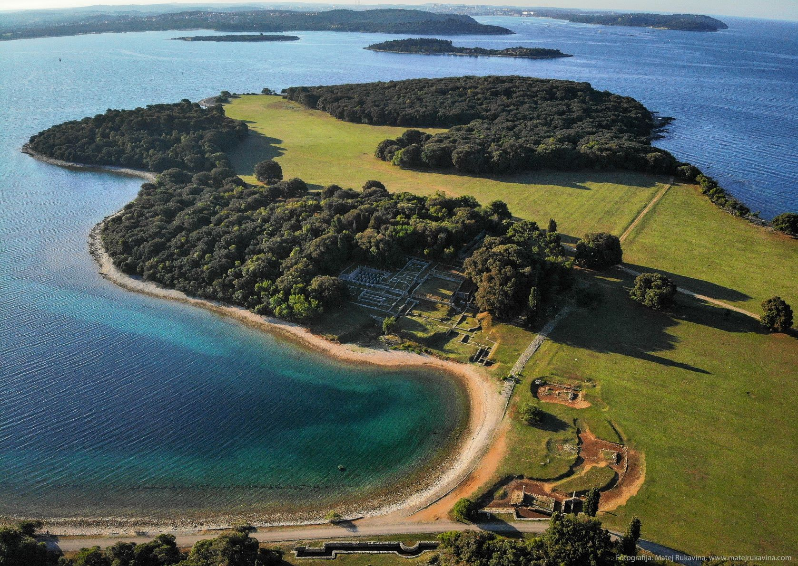
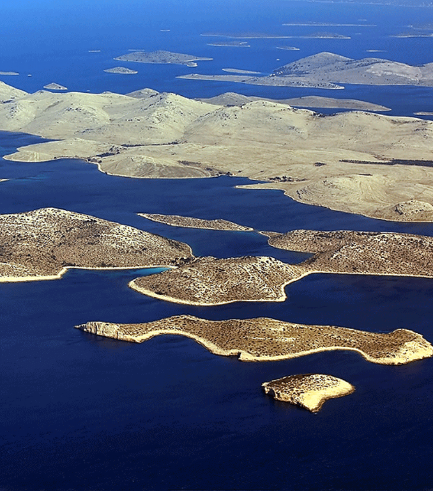
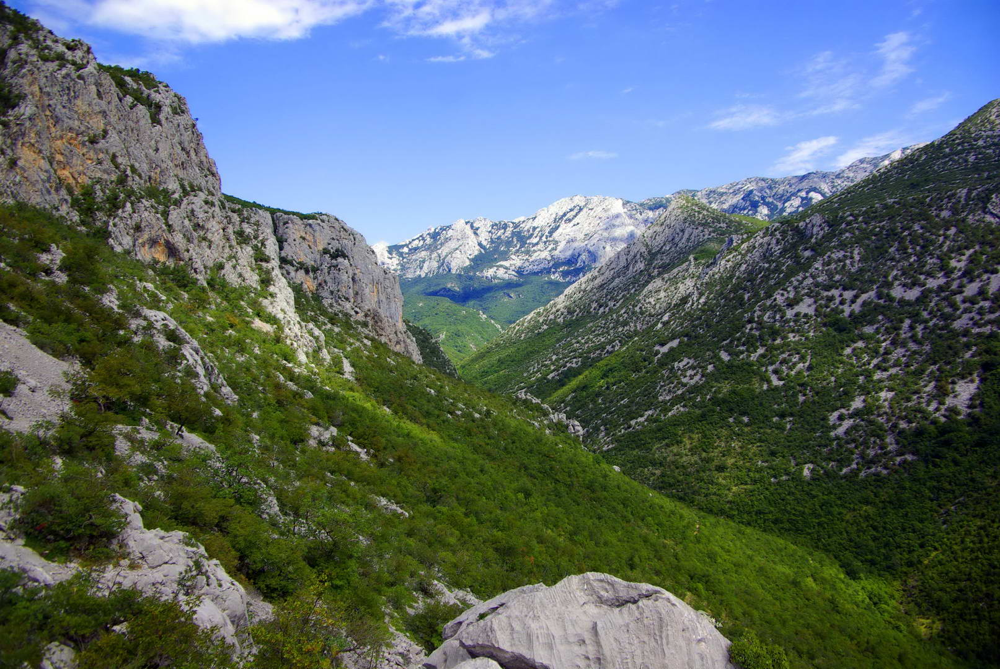
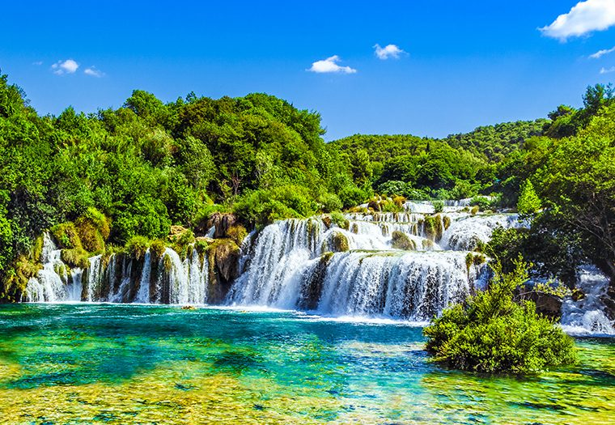
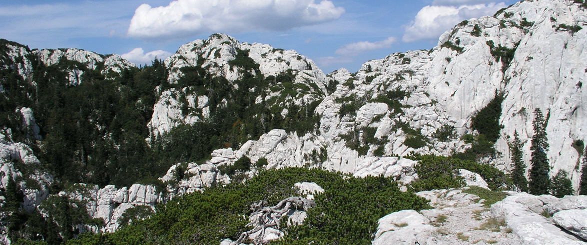
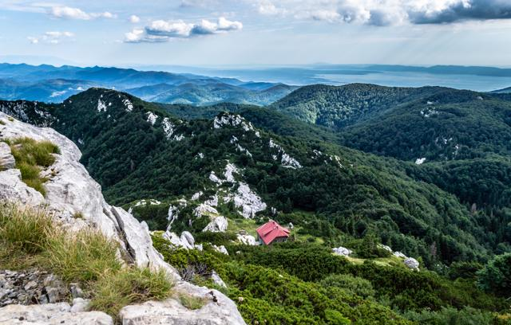
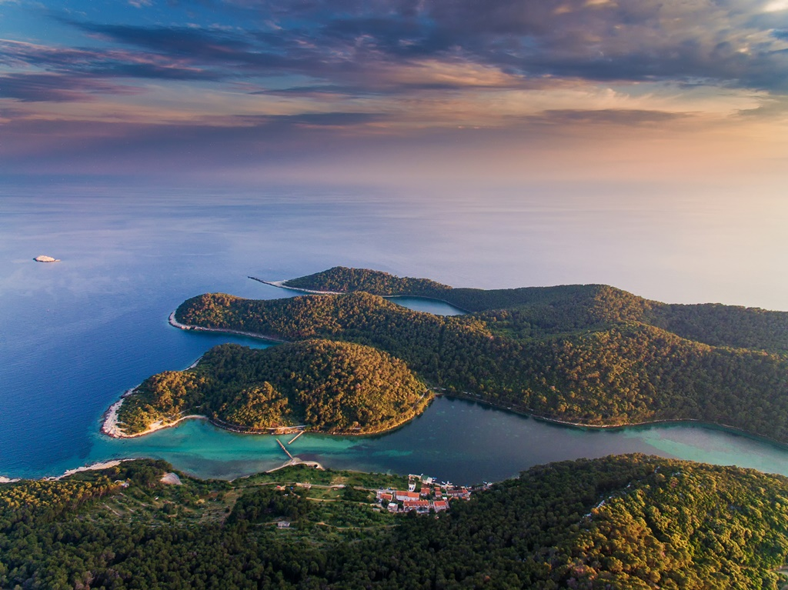
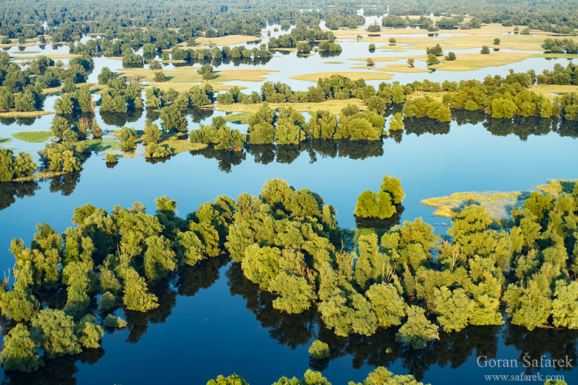
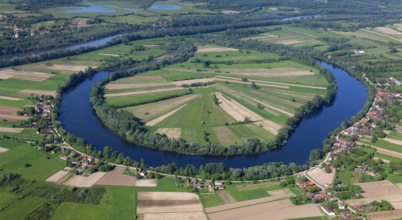
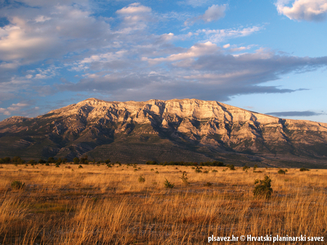

Brijuni su otočje i nacionalni park u Jadranskom moru, na hrvatskom dijelu Jadrana, a sastoje se od 3 otoka i 11 otočića.

Nacionalni park Kornati čini veći dio grupe otoka Kornati u hrvatskom dijelu Jadrana u srednjoj Dalmaciji, zapadno od Šibenika, u Šibensko-kninskoj županiji.

Nacionalni park Paklenica je po proglašenju drugi nacionalni park u Hrvatskoj, proglašen još 19. listopada 1949. godine.

Krka je sedmi nacionalni park u Hrvatskoj poznat po velikom broju jezera i slapova.

Velebit ili velebitski masiv je najduža (145 km), a po nadmorskoj visini četvrta planina u Hrvatskoj.

Nacionalni park "Risnjak", smješten u Gorskom kotaru (Hrvatska), osnovan je 1953. godine na površini od 3041 hektara.

Nacionalni park Mljet obuhvaća sjeverozapadni dio otoka Mljeta, koji se proteže područjem od 5.375 hektara zaštićenog kopna i okolnog mora.

Park prirode Kopački rit je poplavno područje u Baranji, na sjeveroistoku Hrvatske, između rijeka Dunav na istoku i Drave na jugu.

Park prirode Lonjsko polje, sa svojom površinom od 50.650 ha, najveće je zaštićeno močvarno područje ne samo u Republici Hrvatskoj, već i u cijelom dunavskom porječju.

Park prirode Dinara dvanaesti je park prirode Hrvatske, površina iznosi 63.052 hektara.